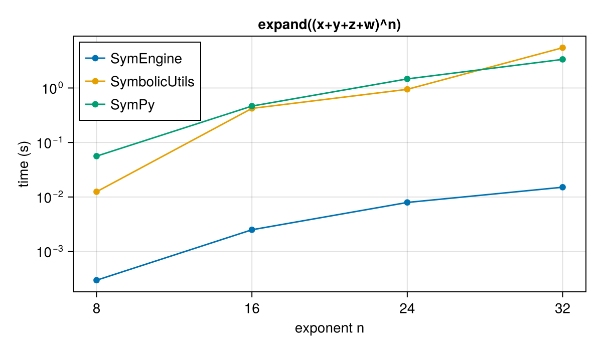
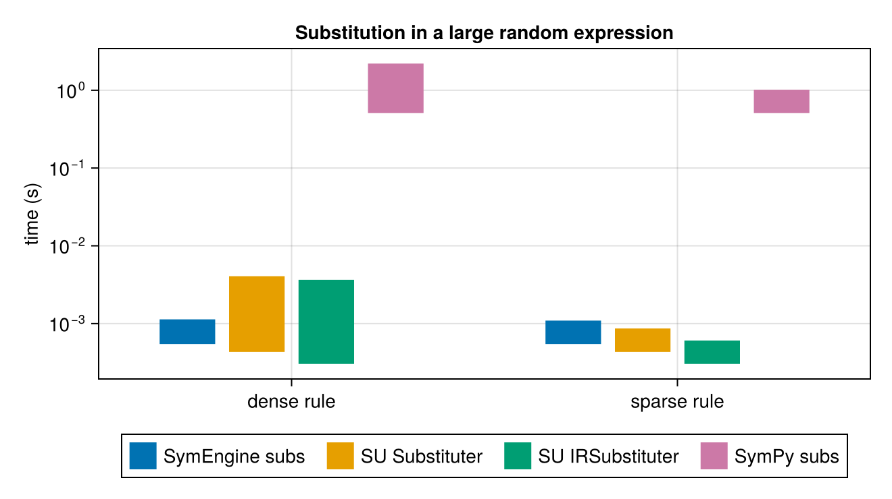
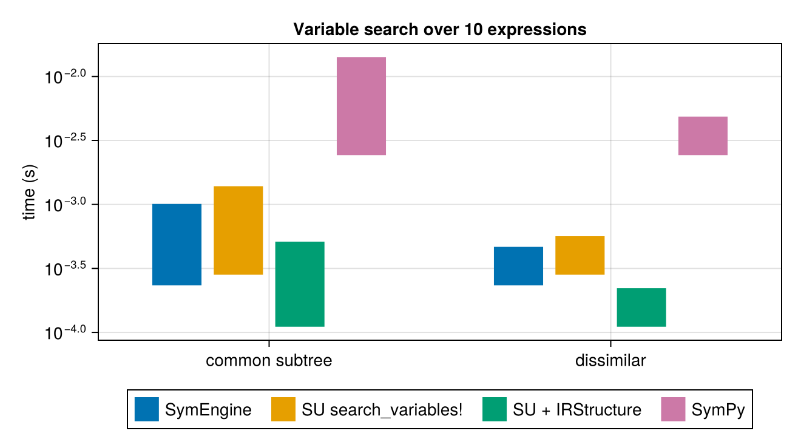
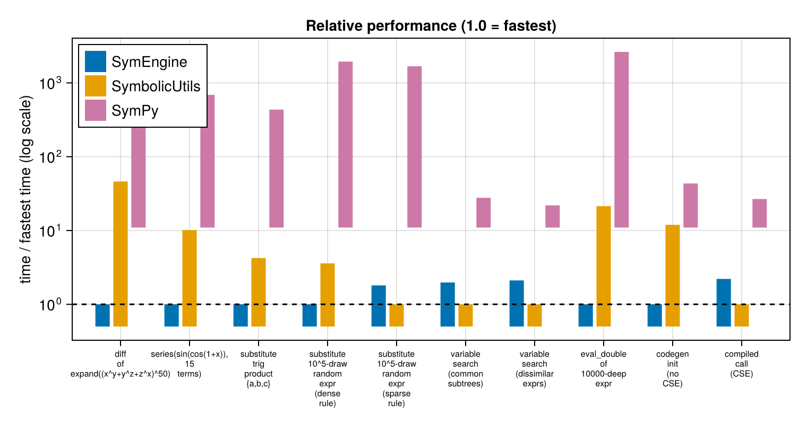

"Aayush Sabharwal, Chris Rackauckas
The following benchmarks compare three symbolic-manipulation packages:
- SymbolicUtils.jl (with Symbolics.jl for differentiation) – a pure-Julia term-rewriting system. Expressions are
BasicSymbolictrees, manipulated by rewrite rules. - SymEngine.jl – Julia wrapper over the symengine C++ library, which implements its core operations in compiled C++.
- SymPy – the pure-Python symbolic mathematics library, called here through PythonCall.jl.
The workloads are adapted from symengine's own C++ benchmark suite (symengine/benchmarks/), recreated for all three packages, plus a set of SymbolicUtils-native workloads taken from SymbolicUtils' own benchmark suite (substitution with and without its IRStructure acceleration structure, and search_variables! expression traversal). The first set plays to SymEngine's strengths (a compiled symbolic kernel); the second set exercises workloads where a Julia-native representation is expected to compete.
Each workload uses structurally equivalent expressions on every side: the random-term generators run the same algorithm over the same atom/function pools (the RNGs differ across languages, so realized trees differ slightly; measured node counts are reported below). Where a package lacks a native operation, the closest practical equivalent is used and noted.
SymPy workloads run in Python via PythonCall.jl and are timed in Python with time.perf_counter (minimum over samples, matching the Chairmarks minimum used for the Julia timings). SymPy caches many results internally, so its caches are cleared before each timed sample – the Julia packages do not memoize these operations.
using SymEngine, SymbolicUtils, Symbolics, Chairmarks, Random,
CairoMakie, PrettyTables, OrderedCollections, PythonCall, CondaPkg
const SU = SymbolicUtils
tmin(b) = minimum(s -> s.time, b.samples)
# results collected for the summary table/plot:
# name => (symengine_seconds, symbolicutils_seconds, sympy_seconds)
const RESULTS = OrderedCollections.OrderedDict{String, NTuple{3, Float64}}()OrderedCollections.OrderedDict{String, Tuple{Float64, Float64, Float64}}()The SymPy side runs in Python. The block below defines the shared helpers: a minimum-of-samples timer that clears SymPy's caches first, the random-term generator, a bottom-up numeric evaluator, and the atom/function pools. SymPy's Add/Mul constructors canonicalize and flatten their arguments, which would collapse the random binary trees; evaluate = false keeps the same tree shape the Julia sides build.
Setup
The SymbolicUtils side needs a few helpers that SymEngine provides natively: an iterative numeric evaluator (SymbolicUtils' recursive evaluate stack-overflows on very deep expressions), a Taylor-series routine driven by Symbolics.executediff, and a shared random-expression generator.
# shared random-expression generator: builds a random binary tree by
# repeatedly pairing off nodes with random binary functions. With the same
# RNG seed and equivalent atom/function pools both packages build
# structurally identical trees.
function random_term(len; atoms, funs, rng, fallback_atom = 1)
xs = rand(rng, atoms, len)
while length(xs) > 1
xs = map(Iterators.partition(xs, 2)) do xy
x = xy[1]; y = get(xy, 2, fallback_atom)
rand(rng, funs)(x, y)
end
end
return xs[]
end
# Iterative numeric evaluator over the BasicSymbolic variant tree.
# SymbolicUtils.evaluate recurses and overflows the stack on very deep
# expressions, so this walks the tree with an explicit stack instead.
function su_eval_double(e)
vals = IdDict{Any,Float64}()
order = Any[]
stack = Any[e]
while !isempty(stack)
n = pop!(stack)
push!(order, n)
u = SU.unwrap(n)
if SU.isterm(u)
for a in u.args
a isa SU.BasicSymbolic && push!(stack, a)
end
elseif SU.isaddmul(u)
for (t, _) in u.dict
push!(stack, t)
end
elseif SU.isdiv(u)
push!(stack, u.num, u.den)
end
end
for n in Iterators.reverse(order)
haskey(vals, n) && continue
u = SU.unwrap(n)
vals[n] = if SU.isconst(u)
Float64(u.val)
elseif SU.isterm(u)
u.f((a isa SU.BasicSymbolic ? vals[a] : Float64(a) for a in u.args)...)
elseif SU.isadd(u)
Float64(u.coeff) + sum(c * vals[t] for (t, c) in u.dict)
elseif SU.ismul(u)
foldl(*, (vals[b]^k for (b, k) in u.dict); init = Float64(u.coeff))
elseif SU.isdiv(u)
vals[u.num] / vals[u.den]
else
error("su_eval_double: unexpected node")
end
end
return vals[e]
end
# Taylor series of `ex` about x = x0 to order n, computed by repeated
# Symbolics.executediff + substitution (mirrors what SymEngine.series does
# internally).
function su_series(ex, x, x0 = 0, n::Integer = 15)
D = Symbolics.Differential(x)
fc = SU.substitute(ex, Dict(x => x0); fold = Val(true))
fp = ex
for k in 1:n
fp = Symbolics.executediff(D, fp)
fc = fc + SU.substitute(fp, Dict(x => x0); fold = Val(true)) *
(x - x0)^k / factorial(big(k))
end
return fc
end
# IRSubstituter.clear_cache! is only defined on some SymbolicUtils versions.
@static if length(methods(SU.clear_cache!)) < 4
SU.clear_cache!(sub::SU.IRSubstituter) = empty!(sub.cache)
end
# Substituter/IRSubstituter cache results; clear before each timed call so
# every sample measures a full substitution pass.
function sub_call(subber, ex)
SU.clear_cache!(subber)
subber(ex)
end
# SymbolicUtils variables used throughout
@syms s_x s_y s_z s_w s_a s_b s_c s_d s_px
# SymEngine variables used throughout
SymEngine.@vars e_x e_y e_z e_w e_a e_b e_c e_d
const e_px = SymEngine.symbols(:e_px)
const su_const = SU.Const{SU.SymReal}
# node counters for reporting realized tree sizes
function su_nodecount(e)
u = SU.unwrap(e)
if SU.isterm(u)
1 + sum(su_nodecount, u.args; init = 0)
elseif SU.isaddmul(u)
1 + sum(su_nodecount, keys(u.dict); init = 0)
elseif SU.isdiv(u)
1 + su_nodecount(u.num) + su_nodecount(u.den)
else
1
end
end
se_nodecount(e) = (a = SymEngine.get_args(e); isempty(a) ? 1 : 1 + sum(se_nodecount, a))se_nodecount (generic function with 1 method)# SymPy namespace: helpers and expressions live in one Python dict so
# per-section code below can reference them by name.
const PYNS = pydict()
pyexec("""
import sys, time, random
sys.setrecursionlimit(1000000)
import sympy
import numpy
from sympy.core.cache import clear_cache
numpy.seterr(all = "ignore")
x, y, z, w = sympy.symbols("x y z w")
a, b, c, d, px = sympy.symbols("a b c d px")
hypotf = sympy.Function("hypot")
def bench(f, mintime = 0.4):
# min-of-samples, matching Chairmarks' reported minimum. SymPy caches
# results internally (e.g. expand), so clear caches before each sample.
clear_cache()
f()
best = float("inf")
spent = 0.0
while spent < mintime:
clear_cache()
t0 = time.perf_counter()
f()
dt = time.perf_counter() - t0
best = min(best, dt)
spent += dt
return best
def time_once(f):
# single timed call, for workloads that take too long to sample
clear_cache()
t0 = time.perf_counter()
f()
return time.perf_counter() - t0
def random_term(length, atoms, funs, rng):
xs = [rng.choice(atoms) for _ in range(length)]
while len(xs) > 1:
new = []
for i in range(0, len(xs) - 1, 2):
new.append(rng.choice(funs)(xs[i], xs[i + 1]))
if len(xs) % 2:
new.append(rng.choice(funs)(xs[-1], sympy.Integer(1)))
xs = new
return xs[0]
# Unevaluated Add/Mul keep the binary-tree shape. Evaluated constructors
# canonicalize + flatten, collapsing the tree to a few percent of its size.
ATOMS = [a, b, c, d, a**2, b**2, a**1.5, sympy.Add(b, c), b**c,
sympy.Integer(1), sympy.Float(2.0)]
FUNS = [
lambda u, v: sympy.Add(u, v, evaluate = False),
lambda u, v: sympy.Mul(u, v, evaluate = False),
lambda u, v: hypotf(u, v),
lambda u, v: sympy.Abs(u, evaluate = False),
lambda u, v: sympy.exp(u, evaluate = False),
]
def eval_double(e):
# bottom-up evaluator, mirroring su_eval_double: postorder traversal,
# identity-keyed value map. sympy's expr.func(*float_args) evaluates
# each node with sympy's own constructors.
vals = {}
for n in sympy.postorder_traversal(e):
if n.is_Number:
vals[id(n)] = float(n)
else:
vals[id(n)] = n.func(*[vals[id(arg)] for arg in n.args])
return float(vals[id(e)])
def node_count(e):
return sum(1 for _ in sympy.preorder_traversal(e))
""", PYNS)
# SymPy timings: bench -> min-of-samples seconds, time_once -> one timed call
pytime(f::Py; mintime = 0.4) = pyconvert(Float64, PYNS["bench"](f; mintime))
pytime1(f::Py) = pyconvert(Float64, PYNS["time_once"](f))pytime1 (generic function with 1 method)Polynomial expansion
expand((x + y + z + w)^n) – dense multinomial expansion. This is the canonical symengine benchmark and plays to the compiled C++ kernel; SymbolicUtils' expand routes through DynamicPolynomials.jl, and SymPy's through its own pure-Python multinomial expansion.
Caveat: SymbolicUtils' expansion uses Int64 coefficients, so multinomial coefficients exceeding 2^63 silently wrap. Term counts and tree shapes stay correct, so the timing workload is representative, but expanded values are only exact below the overflow threshold.
pyexec("""
expand_exprs = {n: (x + y + z + w) ** n for n in (8, 16, 24, 32)}
def sp_expand(n):
return lambda: sympy.expand(expand_exprs[n])
""", PYNS)
expand_ns = [8, 16, 24, 32]
se_expand_t = [tmin(@be SymEngine.expand($(e_x + e_y + e_z + e_w)^$n)) for n in expand_ns]
su_expand_t = [tmin(@be SU.expand($(s_x + s_y + s_z + s_w)^$n)) for n in expand_ns]
sp_expand_t = [pytime(PYNS["sp_expand"](n)) for n in expand_ns]
pretty_table(hcat(expand_ns, se_expand_t, su_expand_t, sp_expand_t);
column_labels = ["n", "SymEngine (s)", "SymbolicUtils (s)", "SymPy (s)"],
backend = :html)<table> <thead> <tr class = "columnLabelRow"> <th style = "font-weight: bold; text-align: right;">n</th> <th style = "font-weight: bold; text-align: right;">SymEngine (s)</th> <th style = "font-weight: bold; text-align: right;">SymbolicUtils (s)</th> <th style = "font-weight: bold; text-align: right;">SymPy (s)</th> </tr> </thead> <tbody> <tr class = "dataRow"> <td style = "text-align: right;">8.0</td> <td style = "text-align: right;">0.000297098</td> <td style = "text-align: right;">0.012471</td> <td style = "text-align: right;">0.05616</td> </tr> <tr class = "dataRow"> <td style = "text-align: right;">16.0</td> <td style = "text-align: right;">0.00250378</td> <td style = "text-align: right;">0.422143</td> <td style = "text-align: right;">0.465623</td> </tr> <tr class = "dataRow"> <td style = "text-align: right;">24.0</td> <td style = "text-align: right;">0.00794064</td> <td style = "text-align: right;">0.945023</td> <td style = "text-align: right;">1.468</td> </tr> <tr class = "dataRow"> <td style = "text-align: right;">32.0</td> <td style = "text-align: right;">0.0151071</td> <td style = "text-align: right;">5.48002</td> <td style = "text-align: right;">3.34991</td> </tr> </tbody> </table>
f = Figure(size = (600, 350))
ax = Axis(f[1, 1], xlabel = "exponent n", ylabel = "time (s)",
title = "expand((x+y+z+w)^n)", xticks = expand_ns, yscale = log10)
scatterlines!(ax, expand_ns, se_expand_t, label = "SymEngine")
scatterlines!(ax, expand_ns, su_expand_t, label = "SymbolicUtils")
scatterlines!(ax, expand_ns, sp_expand_t, label = "SymPy")
axislegend(ax, position = :lt)
f
Symbolic differentiation
d/dx of expand((x^y + y^z + z^x)^50) (1326 expanded terms). SymEngine calls its C++ diff; SymbolicUtils has no diff, so this uses Symbolics.executediff, which differentiates BasicSymbolic expressions directly; SymPy uses expr.diff.
pyexec("""
s3_expr = sympy.expand((x**y + y**z + z**x) ** 50)
def sp_diff():
return lambda: s3_expr.diff(x)
""", PYNS)
s3_se = SymEngine.expand((e_x^e_y + e_y^e_z + e_z^e_x)^50)
s3_su = SU.expand((s_x^s_y + s_y^s_z + s_z^s_x)^50)
se_diff_t = tmin(@be SymEngine.diff($s3_se, $e_x))
su_diff_t = tmin(@be Symbolics.executediff($(Symbolics.Differential(s_x)), $s3_su))
sp_diff_t = pytime(PYNS["sp_diff"]())
RESULTS["diff of expand((x^y+y^z+z^x)^50)"] = (se_diff_t, su_diff_t, sp_diff_t)
pretty_table(hcat(["d/dx expand((x^y+y^z+z^x)^50)"], se_diff_t, su_diff_t, sp_diff_t);
column_labels = ["benchmark", "SymEngine (s)", "SymbolicUtils (s)", "SymPy (s)"],
backend = :html)<table> <thead> <tr class = "columnLabelRow"> <th style = "font-weight: bold; text-align: right;">benchmark</th> <th style = "font-weight: bold; text-align: right;">SymEngine (s)</th> <th style = "font-weight: bold; text-align: right;">SymbolicUtils (s)</th> <th style = "font-weight: bold; text-align: right;">SymPy (s)</th> </tr> </thead> <tbody> <tr class = "dataRow"> <td style = "text-align: right;">d/dx expand((x^y+y^z+z^x)^50)</td> <td style = "text-align: right;">0.00688236</td> <td style = "text-align: right;">0.31743</td> <td style = "text-align: right;">6.79617</td> </tr> </tbody> </table>
Taylor series
series(sin(cos(1 + x)), x, 0, 15) – order-15 Taylor expansion about x = 0. SymEngine's series does repeated diff + subs internally; the SymbolicUtils version does the same with executediff + substitute (su_series in the setup block). SymPy's expr.series is a general series engine; .removeO() strips the O(x^15) term to leave the same polynomial.
pyexec("""
series_expr = sympy.sin(sympy.cos(1 + x))
def sp_series():
return lambda: series_expr.series(x, 0, 15).removeO()
""", PYNS)
ser_se = sin(cos(1 + e_x))
ser_su = sin(cos(1 + s_x))
se_series_t = tmin(@be SymEngine.series($ser_se, $e_x, 0, 15))
su_series_t = tmin(@be su_series($ser_su, $s_x, 0, 15))
sp_series_t = pytime(PYNS["sp_series"]())
RESULTS["series(sin(cos(1+x)), 15 terms)"] = (se_series_t, su_series_t, sp_series_t)
pretty_table(hcat(["series(sin(cos(1+x)), x=0, 15)"], se_series_t, su_series_t,
sp_series_t);
column_labels = ["benchmark", "SymEngine (s)", "SymbolicUtils (s)", "SymPy (s)"],
backend = :html)<table> <thead> <tr class = "columnLabelRow"> <th style = "font-weight: bold; text-align: right;">benchmark</th> <th style = "font-weight: bold; text-align: right;">SymEngine (s)</th> <th style = "font-weight: bold; text-align: right;">SymbolicUtils (s)</th> <th style = "font-weight: bold; text-align: right;">SymPy (s)</th> </tr> </thead> <tbody> <tr class = "dataRow"> <td style = "text-align: right;">series(sin(cos(1+x)), x=0, 15)</td> <td style = "text-align: right;">0.00200192</td> <td style = "text-align: right;">0.0202974</td> <td style = "text-align: right;">1.37955</td> </tr> </tbody> </table>
Substitution
Two workloads from SymbolicUtils' own benchmark suite. First a small trigonometric product, substituting {a, b, c} -> {1, 2, 3}:
pyexec("""
trig_expr = ((sympy.sin(a + b) + sympy.cos(b + c)) *
(sympy.sin(b + c) + sympy.cos(c + a)) *
(sympy.sin(c + a) + sympy.cos(a + b)))
def sp_trig_subs():
return lambda: trig_expr.subs({a: 1, b: 2, c: 3})
""", PYNS)
trig_se = (sin(e_a + e_b) + cos(e_b + e_c)) * (sin(e_b + e_c) + cos(e_c + e_a)) *
(sin(e_c + e_a) + cos(e_a + e_b))
trig_su = (sin(s_a + s_b) + cos(s_b + s_c)) * (sin(s_b + s_c) + cos(s_c + s_a)) *
(sin(s_c + s_a) + cos(s_a + s_b))
se_trig_t = tmin(@be SymEngine.subs($trig_se, $(Dict(e_a => 1, e_b => 2, e_c => 3))))
su_trig_t = tmin(@be SU.substitute($trig_su, $(Dict(s_a => 1, s_b => 2, s_c => 3))))
sp_trig_t = pytime(PYNS["sp_trig_subs"]())
RESULTS["substitute trig product {a,b,c}"] = (se_trig_t, su_trig_t, sp_trig_t)
pretty_table(hcat(["{a,b,c} -> {1,2,3} in trig product"], se_trig_t, su_trig_t,
sp_trig_t);
column_labels = ["benchmark", "SymEngine (s)", "SymbolicUtils (s)", "SymPy (s)"],
backend = :html)<table> <thead> <tr class = "columnLabelRow"> <th style = "font-weight: bold; text-align: right;">benchmark</th> <th style = "font-weight: bold; text-align: right;">SymEngine (s)</th> <th style = "font-weight: bold; text-align: right;">SymbolicUtils (s)</th> <th style = "font-weight: bold; text-align: right;">SymPy (s)</th> </tr> </thead> <tbody> <tr class = "dataRow"> <td style = "text-align: right;">{a,b,c} -> {1,2,3} in trig product</td> <td style = "text-align: right;">1.461e-5</td> <td style = "text-align: right;">6.186e-5</td> <td style = "text-align: right;">0.00634618</td> </tr> </tbody> </table>
Then substitution in a large random expression: the generator consumes 10^5 random draws, but the unary draws (abs, exp) discard one subtree, so the realized tree has a few thousand nodes (exact counts printed below; SymbolicUtils' canonicalizing constructors fold some nodes too, and the RNGs differ across languages). On the SymbolicUtils side there are two drivers: Substituter (plain tree traversal) and IRSubstituter, which substitutes through a shared IRStructure so repeated subexpressions are visited once. The dense rule a -> 2 sin(b) matches many nodes; the sparse rule abs(b+c) -> 2 sin(b) matches almost none – the case where skipping subtrees pays off. SymEngine and SymPy have no IRStructure equivalent, so only subs is compared.
pyexec("""
rng = random.Random(123)
rt_expr = random_term(100000, ATOMS, FUNS, rng)
dense_rule = {a: 2 * sympy.sin(b)}
sparse_rule = {sympy.Abs(b + c): 2 * sympy.sin(b)}
def sp_sub_dense():
return lambda: rt_expr.subs(dense_rule)
def sp_sub_sparse():
return lambda: rt_expr.subs(sparse_rule)
rt_nodes = node_count(rt_expr)
""", PYNS)
rng = MersenneTwister(123)
se_atoms = [e_a, e_b, e_c, e_d, e_a^2, e_b^2, e_a^1.5, (e_b + e_c), e_b^e_c,
SymEngine.Basic(1), SymEngine.Basic(2.0)]
se_funs = [+, *, (x, y) -> SymFunction(:hypot)(x, y), (x, y) -> abs(x),
(x, y) -> exp(x)]
rt_se = random_term(100000; atoms = se_atoms, funs = se_funs, rng)
rng = MersenneTwister(123) # same seed -> structurally identical tree
su_atoms = [s_a, s_b, s_c, s_d, s_a^2, s_b^2, s_a^1.5, (s_b + s_c), s_b^s_c, 1, 2.0]
su_funs = [+, *, hypot, (x, y) -> abs(x), (x, y) -> exp(x)]
rt_su = random_term(100000; atoms = su_atoms, funs = su_funs, rng)
dense_se = Dict(e_a => 2 * sin(e_b))
dense_su = Dict(s_a => 2 * sin(s_b))
sparse_se = Dict(abs(e_b + e_c) => 2 * sin(e_b))
sparse_su = Dict(abs(s_b + s_c) => 2 * sin(s_b))
sub_dense_ref = SU.Substituter{false}(dense_su)
sub_dense_ir = SU.IRSubstituter{false}(SU.IRStructure{SU.SymReal}(), dense_su)
sub_sparse_ref = SU.Substituter{false}(sparse_su)
sub_sparse_ir = SU.IRSubstituter{false}(SU.IRStructure{SU.SymReal}(), sparse_su)
se_sub_dense_t = tmin(@be SymEngine.subs($rt_se, $dense_se))
su_sub_dense_ref_t = tmin(@be sub_call($sub_dense_ref, $rt_su))
su_sub_dense_ir_t = tmin(@be sub_call($sub_dense_ir, $rt_su))
sp_sub_dense_t = pytime(PYNS["sp_sub_dense"]())
RESULTS["substitute 10^5-draw random expr (dense rule)"] =
(se_sub_dense_t, su_sub_dense_ref_t, sp_sub_dense_t)
se_sub_sparse_t = tmin(@be SymEngine.subs($rt_se, $sparse_se))
su_sub_sparse_ref_t = tmin(@be sub_call($sub_sparse_ref, $rt_su))
su_sub_sparse_ir_t = tmin(@be sub_call($sub_sparse_ir, $rt_su))
sp_sub_sparse_t = pytime(PYNS["sp_sub_sparse"]())
RESULTS["substitute 10^5-draw random expr (sparse rule)"] =
(se_sub_sparse_t, su_sub_sparse_ir_t, sp_sub_sparse_t)
pretty_table(
hcat(["SymEngine", "SymbolicUtils", "SymPy"],
[se_nodecount(rt_se), su_nodecount(rt_su), pyconvert(Int, PYNS["rt_nodes"])]);
column_labels = ["package", "realized tree nodes"], backend = :html)
pretty_table(
hcat(["dense rule", "sparse rule"],
[se_sub_dense_t, se_sub_sparse_t],
[su_sub_dense_ref_t, su_sub_sparse_ref_t],
[su_sub_dense_ir_t, su_sub_sparse_ir_t],
[sp_sub_dense_t, sp_sub_sparse_t]);
column_labels = ["workload", "SymEngine subs (s)",
"SU Substituter (s)", "SU IRSubstituter (s)", "SymPy subs (s)"],
backend = :html)<table> <thead> <tr class = "columnLabelRow"> <th style = "font-weight: bold; text-align: right;">package</th> <th style = "font-weight: bold; text-align: right;">realized tree nodes</th> </tr> </thead> <tbody> <tr class = "dataRow"> <td style = "text-align: right;">SymEngine</td> <td style = "text-align: right;">3271</td> </tr> <tr class = "dataRow"> <td style = "text-align: right;">SymbolicUtils</td> <td style = "text-align: right;">2810</td> </tr> <tr class = "dataRow"> <td style = "text-align: right;">SymPy</td> <td style = "text-align: right;">8498</td> </tr> </tbody> </table>
<table> <thead> <tr class = "columnLabelRow"> <th style = "font-weight: bold; text-align: right;">workload</th> <th style = "font-weight: bold; text-align: right;">SymEngine subs (s)</th> <th style = "font-weight: bold; text-align: right;">SU Substituter (s)</th> <th style = "font-weight: bold; text-align: right;">SU IRSubstituter (s)</th> <th style = "font-weight: bold; text-align: right;">SymPy subs (s)</th> </tr> </thead> <tbody> <tr class = "dataRow"> <td style = "text-align: right;">dense rule</td> <td style = "text-align: right;">0.0011342</td> <td style = "text-align: right;">0.0040689</td> <td style = "text-align: right;">0.00366066</td> <td style = "text-align: right;">2.20271</td> </tr> <tr class = "dataRow"> <td style = "text-align: right;">sparse rule</td> <td style = "text-align: right;">0.00109328</td> <td style = "text-align: right;">0.000865515</td> <td style = "text-align: right;">0.000605856</td> <td style = "text-align: right;">1.01643</td> </tr> </tbody> </table>
colors = Makie.wong_colors()
f = Figure(size = (660, 370))
ax = Axis(f[1, 1], ylabel = "time (s)", yscale = log10,
title = "Substitution in a large random expression",
xticks = (1:2, ["dense rule", "sparse rule"]))
w = 0.18
barplot!(ax, [0.73, 1.73], [se_sub_dense_t, se_sub_sparse_t], width = w,
color = colors[1], label = "SymEngine subs")
barplot!(ax, [0.91, 1.91], [su_sub_dense_ref_t, su_sub_sparse_ref_t], width = w,
color = colors[2], label = "SU Substituter")
barplot!(ax, [1.09, 2.09], [su_sub_dense_ir_t, su_sub_sparse_ir_t], width = w,
color = colors[3], label = "SU IRSubstituter")
barplot!(ax, [1.27, 2.27], [sp_sub_dense_t, sp_sub_sparse_t], width = w,
color = colors[4], label = "SymPy subs")
# autolimits ignore bar width; pad so the last bar isn't clipped
xlims!(ax, 0.5, 2.5)
Legend(f[2, 1], ax, orientation = :horizontal)
f
Searching expressions for variables
search_variables! walks an expression collecting the symbolic variables (here: any node passing the internal variable filter) into a buffer. Given a populated IRStructure, shared subexpressions are visited once. Ten expressions are searched; the common set shares a subtree built from 5000 draws (hypot wraps it to prevent AC-flattening eliminating the shared node), the dissimilar set shares nothing. SymEngine's and SymPy's equivalent is accumulating free_symbols into a set.
pyexec("""
rng = random.Random(123)
base_expr = random_term(5000, ATOMS, FUNS, rng)
common_exprs = [hypotf(base_expr, px + i) for i in range(1, 11)]
dissim_exprs = [random_term(1000, ATOMS, FUNS, rng) for _ in range(10)]
def fs_accum(exprs):
s = set()
for e in exprs:
s |= e.free_symbols
return s
def sp_sv_common():
return lambda: fs_accum(common_exprs)
def sp_sv_dissim():
return lambda: fs_accum(dissim_exprs)
""", PYNS)
rng = MersenneTwister(123)
base_se = random_term(5000; atoms = se_atoms, funs = se_funs, rng)
common_se = [SymFunction(:hypot)(base_se, e_px + i) for i in 1:10]
dissim_se = [random_term(1000; atoms = se_atoms, funs = se_funs, rng) for _ in 1:10]
rng = MersenneTwister(123)
base_su = random_term(5000; atoms = su_atoms, funs = su_funs, rng)
common_su = [hypot(base_su, s_px + i) for i in 1:10]
dissim_su = [random_term(1000; atoms = su_atoms, funs = su_funs, rng) for _ in 1:10]
function se_search!(buf, exprs)
empty!(buf)
for e in exprs
union!(buf, SymEngine.free_symbols(e))
end
return buf
end
function su_search_ref!(buf, exprs)
empty!(buf)
SU.search_variables!(buf, exprs)
return buf
end
function su_search_ir!(buf, ir, exprs)
empty!(buf)
for e in exprs
SU.search_variables!(buf, ir, e)
end
return buf
end
se_buf = Set{SymEngine.Basic}()
su_buf = Set{SU.BasicSymbolic{SU.SymReal}}()
ir_common = SU.IRStructure{SU.SymReal}()
for e in common_su; SU.populate_ir!(ir_common, e); end
ir_dissim = SU.IRStructure{SU.SymReal}()
for e in dissim_su; SU.populate_ir!(ir_dissim, e); end
se_sv_common_t = tmin(@be se_search!($se_buf, $common_se))
su_sv_common_ref_t = tmin(@be su_search_ref!($su_buf, $common_su))
su_sv_common_ir_t = tmin(@be su_search_ir!($su_buf, $ir_common, $common_su))
sp_sv_common_t = pytime(PYNS["sp_sv_common"]())
RESULTS["variable search (common subtrees)"] =
(se_sv_common_t, su_sv_common_ir_t, sp_sv_common_t)
se_sv_dissim_t = tmin(@be se_search!($se_buf, $dissim_se))
su_sv_dissim_ref_t = tmin(@be su_search_ref!($su_buf, $dissim_su))
su_sv_dissim_ir_t = tmin(@be su_search_ir!($su_buf, $ir_dissim, $dissim_su))
sp_sv_dissim_t = pytime(PYNS["sp_sv_dissim"]())
RESULTS["variable search (dissimilar exprs)"] =
(se_sv_dissim_t, su_sv_dissim_ir_t, sp_sv_dissim_t)
pretty_table(
hcat(["common subtree", "dissimilar"],
[se_sv_common_t, se_sv_dissim_t],
[su_sv_common_ref_t, su_sv_dissim_ref_t],
[su_sv_common_ir_t, su_sv_dissim_ir_t],
[sp_sv_common_t, sp_sv_dissim_t]);
column_labels = ["workload", "SymEngine free_symbols (s)",
"SU search_variables! (s)", "SU + IRStructure (s)",
"SymPy free_symbols (s)"],
backend = :html)<table> <thead> <tr class = "columnLabelRow"> <th style = "font-weight: bold; text-align: right;">workload</th> <th style = "font-weight: bold; text-align: right;">SymEngine freesymbols (s)</th> <th style = "font-weight: bold; text-align: right;">SU searchvariables! (s)</th> <th style = "font-weight: bold; text-align: right;">SU + IRStructure (s)</th> <th style = "font-weight: bold; text-align: right;">SymPy free_symbols (s)</th> </tr> </thead> <tbody> <tr class = "dataRow"> <td style = "text-align: right;">common subtree</td> <td style = "text-align: right;">0.0010097</td> <td style = "text-align: right;">0.00138805</td> <td style = "text-align: right;">0.000510827</td> <td style = "text-align: right;">0.014175</td> </tr> <tr class = "dataRow"> <td style = "text-align: right;">dissimilar</td> <td style = "text-align: right;">0.000466417</td> <td style = "text-align: right;">0.000565366</td> <td style = "text-align: right;">0.000221428</td> <td style = "text-align: right;">0.00485524</td> </tr> </tbody> </table>
f = Figure(size = (660, 370))
ax = Axis(f[1, 1], ylabel = "time (s)", yscale = log10,
title = "Variable search over 10 expressions",
xticks = (1:2, ["common subtree", "dissimilar"]))
barplot!(ax, [0.73, 1.73], [se_sv_common_t, se_sv_dissim_t], width = w,
color = colors[1], label = "SymEngine")
barplot!(ax, [0.91, 1.91], [su_sv_common_ref_t, su_sv_dissim_ref_t], width = w,
color = colors[2], label = "SU search_variables!")
barplot!(ax, [1.09, 2.09], [su_sv_common_ir_t, su_sv_dissim_ir_t], width = w,
color = colors[3], label = "SU + IRStructure")
barplot!(ax, [1.27, 2.27], [sp_sv_common_t, sp_sv_dissim_t], width = w,
color = colors[4], label = "SymPy")
xlims!(ax, 0.5, 2.5)
Legend(f[2, 1], ax, orientation = :horizontal)
f
Numeric evaluation
Evaluating a 10000-deep nested expression ((e + 1/8)*3 + 1)^(2/3) (applied repeatedly to sin(1)) to double precision. SymEngine evaluates the tree in C++. The other two packages cannot use their built-in evaluators here: SymbolicUtils' recursive evaluate overflows the stack, and SymPy's evalf re-evaluates each Pow's base at increasing working precision, which makes it exponential in the nesting depth (~4x slower per level on this expression: 0.04 s at depth 5, 2.6 s at depth 8). Both therefore use the same bottom-up postorder-traversal approach – su_eval_double on the Julia side, eval_double in Python – so this measures the practical cost of deep-tree evaluation in each system.
pyexec("""
deep_expr = sympy.sin(1)
_cc = sympy.Rational(1, 8)
_tt = sympy.Rational(2, 3)
for _ in range(10000):
deep_expr = sympy.Pow(
sympy.Add(
sympy.Mul(sympy.Add(deep_expr, _cc, evaluate = False), 3,
evaluate = False),
1, evaluate = False),
_tt, evaluate = False)
def sp_eval_timed():
# one call returns (time, value): ~40 s/sample makes min-of-samples
# impractical, and the assert below reuses the same evaluation
clear_cache()
t0 = time.perf_counter()
v = eval_double(deep_expr)
return (time.perf_counter() - t0, v)
""", PYNS)
function se_deep_expr(n)
e = sin(SymEngine.Basic(1)); c = SymEngine.Basic(2)^(-3); t = SymEngine.Basic(2) / 3
for _ in 1:n
e = ((e + c) * 3 + 1)^t
end
return e
end
function su_deep_expr(n)
e = SU.term(sin, 1); c = 1 // 8; t = 2 // 3
for _ in 1:n
e = SU.term(^, SU.term(+, SU.term(*, SU.term(+, e, c), 3), 1), t)
end
return e
end
deep_se = se_deep_expr(10000)
deep_su = su_deep_expr(10000)
se_eval_t = tmin(@be Float64(SymEngine.evalf($deep_se, 53, true)))
su_eval_t = tmin(@be su_eval_double($deep_su))
_sp_eval = PYNS["sp_eval_timed"]()
sp_eval_t = pyconvert(Float64, _sp_eval[0])
sp_eval_v = pyconvert(Float64, _sp_eval[1])
RESULTS["eval_double of 10000-deep expr"] = (se_eval_t, su_eval_t, sp_eval_t)
# sanity check: all three should evaluate the same expression
@assert isapprox(Float64(SymEngine.evalf(deep_se, 53, true)), su_eval_double(deep_su);
rtol = 1e-10)
@assert isapprox(su_eval_double(deep_su), sp_eval_v; rtol = 1e-10)
pretty_table(hcat(["eval_double(10000-deep nest)"], se_eval_t, su_eval_t, sp_eval_t);
column_labels = ["benchmark", "SymEngine (s)", "SymbolicUtils (s)", "SymPy (s)"],
backend = :html)<table> <thead> <tr class = "columnLabelRow"> <th style = "font-weight: bold; text-align: right;">benchmark</th> <th style = "font-weight: bold; text-align: right;">SymEngine (s)</th> <th style = "font-weight: bold; text-align: right;">SymbolicUtils (s)</th> <th style = "font-weight: bold; text-align: right;">SymPy (s)</th> </tr> </thead> <tbody> <tr class = "dataRow"> <td style = "text-align: right;">eval_double(10000-deep nest)</td> <td style = "text-align: right;">0.011808</td> <td style = "text-align: right;">0.252506</td> <td style = "text-align: right;">31.0587</td> </tr> </tbody> </table>
Compiled function evaluation
All three packages can turn a symbolic expression into a callable. SymEngine initializes a LambdaRealDoubleVisitor (an interpreter over the expression tree, optionally CSE'd); SymbolicUtils lowers through Code.Func/toexpr and evals a native Julia function; SymPy's lambdify generates and execs a Python function (numpy-backed here, so domain errors yield inf/nan like the C++ visitors instead of raising). We measure initialization and per-call cost on a moderately large expression (with and without common-subexpression elimination).
pyexec("""
_v = [sympy.log(x), sympy.Abs(x), sympy.tan(x), sympy.sinh(x), sympy.cosh(x),
sympy.tanh(x), sympy.asinh(y), sympy.acosh(y), sympy.atanh(x),
sympy.asin(x), sympy.acos(x), sympy.atan(x)]
codegen_expr = (sympy.sin(x) + (y**4 * z * 2 + sympy.sin(x)**2)) * sum(_v)
for _ in range(4):
codegen_expr = ((2**sympy.E + codegen_expr +
x**(sympy.E**sympy.cos(x))) * codegen_expr)
def sp_codegen_init():
return lambda: sympy.lambdify((x, y, z), codegen_expr, "numpy")
def sp_codegen_init_cse():
return lambda: sympy.lambdify((x, y, z), codegen_expr, "numpy", cse = True)
sp_fn = sympy.lambdify((x, y, z), codegen_expr, "numpy")
sp_fn_cse = sympy.lambdify((x, y, z), codegen_expr, "numpy", cse = True)
def sp_call():
return lambda: sp_fn(0.0, 1.732, 3.464)
def sp_call_cse():
return lambda: sp_fn_cse(0.0, 1.732, 3.464)
""", PYNS)
mutable struct LambdaVisitor
ptr::Ptr{Cvoid}
function LambdaVisitor()
v = new(ccall((:lambda_real_double_visitor_new, SymEngine.libsymengine),
Ptr{Cvoid}, ()))
finalizer(v) do w
ccall((:lambda_real_double_visitor_free, SymEngine.libsymengine),
Cvoid, (Ptr{Cvoid},), w.ptr)
end
return v
end
end
function lambda_init!(v, args, exprs; cse::Bool = false)
ccall((:lambda_real_double_visitor_init, SymEngine.libsymengine), Cvoid,
(Ptr{Cvoid}, Ptr{Cvoid}, Ptr{Cvoid}, Cint), v.ptr, args.ptr, exprs.ptr, cse)
return v
end
function lambda_call!(v, outs::Vector{Cdouble}, inps::Vector{Cdouble})
ccall((:lambda_real_double_visitor_call, SymEngine.libsymengine), Cvoid,
(Ptr{Cvoid}, Ptr{Cdouble}, Ptr{Cdouble}), v.ptr, outs, inps)
return outs
end
function su_codegen(inputs, outputs; cse::Bool)
body = SU.Code.MakeTuple(outputs)
cse && (body = SU.Code.cse(body))
st = SU.Code.LazyState()
# NaNMath rewrites: return NaN on domain errors like the C++ visitors
st.rewrites[:nanmath] = true
return eval(SU.Code.toexpr(SU.Code.Func(collect(inputs), [], body), st))
end
function build_codegen_exprs()
v_se = [log(e_x), abs(e_x), tan(e_x), sinh(e_x), cosh(e_x), tanh(e_x),
asinh(e_y), acosh(e_y), atanh(e_x), asin(e_x), acos(e_x), atan(e_x)]
r_se = (sin(e_x) + (e_y^4 * e_z * 2 + sin(e_x)^2)) * foldl(+, v_se)
for _ in 1:4
r_se = (SymEngine.Basic(2)^SymEngine.E + r_se +
e_x^(SymEngine.E^cos(e_x))) * r_se
end
v_su = [log(s_x), abs(s_x), tan(s_x), sinh(s_x), cosh(s_x), tanh(s_x),
asinh(s_y), acosh(s_y), atanh(s_x), asin(s_x), acos(s_x), atan(s_x)]
r_su = (sin(s_x) + (s_y^4 * s_z * 2 + sin(s_x)^2)) * foldl(+, v_su)
# 2^e folded to a Const: a zero-symbol Term in an Add crashes get_degrees
# during codegen (empty degree list)
for _ in 1:4
r_su = (su_const(2^exp(1)) + r_su + s_x^(su_const(exp(1))^cos(s_x))) * r_su
end
return r_se, r_su
end
r_se, r_su = build_codegen_exprs()
se_inputs = convert(SymEngine.CVecBasic, SymEngine.Basic[e_x, e_y, e_z])
se_outputs = convert(SymEngine.CVecBasic, SymEngine.Basic[r_se])
se_codegen_t = tmin(@be lambda_init!($LambdaVisitor(), $se_inputs, $se_outputs))
se_codegen_cse_t = tmin(@be lambda_init!($LambdaVisitor(), $se_inputs, $se_outputs; cse = true))
su_codegen_t = tmin(@be su_codegen($[s_x, s_y, s_z], $[r_su]; cse = false))
su_codegen_cse_t = tmin(@be su_codegen($[s_x, s_y, s_z], $[r_su]; cse = true))
sp_codegen_t = pytime(PYNS["sp_codegen_init"]())
sp_codegen_cse_t = pytime(PYNS["sp_codegen_init_cse"]())
RESULTS["codegen init (no CSE)"] = (se_codegen_t, su_codegen_t, sp_codegen_t)
# build the callers
se_vis = lambda_init!(LambdaVisitor(), se_inputs, se_outputs)
se_vis_cse = lambda_init!(LambdaVisitor(), se_inputs, se_outputs; cse = true)
su_fn = su_codegen([s_x, s_y, s_z], [r_su]; cse = false)
su_fn_cse = su_codegen([s_x, s_y, s_z], [r_su]; cse = true)
inps = Cdouble[0.0, 1.732, 3.464]
outs = zeros(Cdouble, 1)
se_call_t = tmin(@be lambda_call!($se_vis, $outs, $(copy(inps))))
se_call_cse_t = tmin(@be lambda_call!($se_vis_cse, $outs, $(copy(inps))))
su_call_t = tmin(@be sum($su_fn($(copy(inps))...)))
su_call_cse_t = tmin(@be sum($su_fn_cse($(copy(inps))...)))
sp_call_t = pytime(PYNS["sp_call"]())
sp_call_cse_t = pytime(PYNS["sp_call_cse"]())
RESULTS["compiled call (CSE)"] = (se_call_cse_t, su_call_cse_t, sp_call_cse_t)
pretty_table(
hcat(["init (no CSE)", "init (CSE)", "call (no CSE)", "call (CSE)"],
[se_codegen_t, se_codegen_cse_t, se_call_t, se_call_cse_t],
[su_codegen_t, su_codegen_cse_t, su_call_t, su_call_cse_t],
[sp_codegen_t, sp_codegen_cse_t, sp_call_t, sp_call_cse_t]);
column_labels = ["benchmark", "SymEngine (s)", "SymbolicUtils (s)", "SymPy (s)"],
backend = :html)<table> <thead> <tr class = "columnLabelRow"> <th style = "font-weight: bold; text-align: right;">benchmark</th> <th style = "font-weight: bold; text-align: right;">SymEngine (s)</th> <th style = "font-weight: bold; text-align: right;">SymbolicUtils (s)</th> <th style = "font-weight: bold; text-align: right;">SymPy (s)</th> </tr> </thead> <tbody> <tr class = "dataRow"> <td style = "text-align: right;">init (no CSE)</td> <td style = "text-align: right;">0.00113635</td> <td style = "text-align: right;">0.013558</td> <td style = "text-align: right;">0.0493009</td> </tr> <tr class = "dataRow"> <td style = "text-align: right;">init (CSE)</td> <td style = "text-align: right;">0.000167459</td> <td style = "text-align: right;">0.00334975</td> <td style = "text-align: right;">0.0352891</td> </tr> <tr class = "dataRow"> <td style = "text-align: right;">call (no CSE)</td> <td style = "text-align: right;">1.0605e-5</td> <td style = "text-align: right;">2.55e-6</td> <td style = "text-align: right;">0.000118477</td> </tr> <tr class = "dataRow"> <td style = "text-align: right;">call (CSE)</td> <td style = "text-align: right;">6.89976e-7</td> <td style = "text-align: right;">3.12529e-7</td> <td style = "text-align: right;">8.35024e-6</td> </tr> </tbody> </table>
Summary
For the substitution and search workloads, the SymbolicUtils column reports the better of the two measured variants (Substituter/search_variables! vs their IRStructure-backed counterparts): Substituter for the dense rule, IRStructure for the sparse rule and both searches.
names = collect(keys(RESULTS))
se_t = [RESULTS[n][1] for n in names]
su_t = [RESULTS[n][2] for n in names]
sp_t = [RESULTS[n][3] for n in names]
pretty_table(hcat(names, se_t, su_t, sp_t);
column_labels = ["benchmark", "SymEngine (s)", "SymbolicUtils (s)",
"SymPy (s)"], backend = :html)<table> <thead> <tr class = "columnLabelRow"> <th style = "font-weight: bold; text-align: right;">benchmark</th> <th style = "font-weight: bold; text-align: right;">SymEngine (s)</th> <th style = "font-weight: bold; text-align: right;">SymbolicUtils (s)</th> <th style = "font-weight: bold; text-align: right;">SymPy (s)</th> </tr> </thead> <tbody> <tr class = "dataRow"> <td style = "text-align: right;">diff of expand((x^y+y^z+z^x)^50)</td> <td style = "text-align: right;">0.00688236</td> <td style = "text-align: right;">0.31743</td> <td style = "text-align: right;">6.79617</td> </tr> <tr class = "dataRow"> <td style = "text-align: right;">series(sin(cos(1+x)), 15 terms)</td> <td style = "text-align: right;">0.00200192</td> <td style = "text-align: right;">0.0202974</td> <td style = "text-align: right;">1.37955</td> </tr> <tr class = "dataRow"> <td style = "text-align: right;">substitute trig product {a,b,c}</td> <td style = "text-align: right;">1.461e-5</td> <td style = "text-align: right;">6.186e-5</td> <td style = "text-align: right;">0.00634618</td> </tr> <tr class = "dataRow"> <td style = "text-align: right;">substitute 10^5-draw random expr (dense rule)</td> <td style = "text-align: right;">0.0011342</td> <td style = "text-align: right;">0.0040689</td> <td style = "text-align: right;">2.20271</td> </tr> <tr class = "dataRow"> <td style = "text-align: right;">substitute 10^5-draw random expr (sparse rule)</td> <td style = "text-align: right;">0.00109328</td> <td style = "text-align: right;">0.000605856</td> <td style = "text-align: right;">1.01643</td> </tr> <tr class = "dataRow"> <td style = "text-align: right;">variable search (common subtrees)</td> <td style = "text-align: right;">0.0010097</td> <td style = "text-align: right;">0.000510827</td> <td style = "text-align: right;">0.014175</td> </tr> <tr class = "dataRow"> <td style = "text-align: right;">variable search (dissimilar exprs)</td> <td style = "text-align: right;">0.000466417</td> <td style = "text-align: right;">0.000221428</td> <td style = "text-align: right;">0.00485524</td> </tr> <tr class = "dataRow"> <td style = "text-align: right;">eval_double of 10000-deep expr</td> <td style = "text-align: right;">0.011808</td> <td style = "text-align: right;">0.252506</td> <td style = "text-align: right;">31.0587</td> </tr> <tr class = "dataRow"> <td style = "text-align: right;">codegen init (no CSE)</td> <td style = "text-align: right;">0.00113635</td> <td style = "text-align: right;">0.013558</td> <td style = "text-align: right;">0.0493009</td> </tr> <tr class = "dataRow"> <td style = "text-align: right;">compiled call (CSE)</td> <td style = "text-align: right;">6.89976e-7</td> <td style = "text-align: right;">3.12529e-7</td> <td style = "text-align: right;">8.35024e-6</td> </tr> </tbody> </table>
# each package's time relative to the fastest on that workload
best_t = [min(se_t[i], su_t[i], sp_t[i]) for i in eachindex(names)]
rel_se = se_t ./ best_t
rel_su = su_t ./ best_t
rel_sp = sp_t ./ best_t
f = Figure(size = (760, 400))
ax = Axis(f[1, 1], ylabel = "time / fastest time (log scale)",
yscale = log10, title = "Relative performance (1.0 = fastest)",
xticks = (1:length(names), [replace(n, " " => "\n") for n in names]),
xticklabelsize = 8)
w2 = 0.26
barplot!(ax, (1:length(names)) .- w2, rel_se, width = w2,
color = colors[1], label = "SymEngine")
barplot!(ax, 1:length(names), rel_su, width = w2,
color = colors[2], label = "SymbolicUtils")
barplot!(ax, (1:length(names)) .+ w2, rel_sp, width = w2,
color = colors[4], label = "SymPy")
xlims!(ax, 0.3, length(names) + 0.7)
hlines!(ax, [1.0], color = :black, linestyle = :dash)
axislegend(ax, position = :lt)
f
Appendix
These benchmarks are a part of the SciMLBenchmarks.jl repository, found at: https://github.com/SciML/SciMLBenchmarks.jl. For more information on high-performance scientific machine learning, check out the SciML Open Source Software Organization https://sciml.ai.
To locally run this benchmark, do the following commands:
using SciMLBenchmarks
SciMLBenchmarks.weave_file("benchmarks/Symbolics","SymEngineComparison.jmd")Computer Information:
Julia Version 1.13.0
Commit d1c37793dd2 (2026-09-09 19:00 UTC)
Build Info:
Official https://julialang.org release
Platform Info:
OS: Linux (x86_64-linux-gnu)
CPU: 128 × AMD EPYC 7502 32-Core Processor
WORD_SIZE: 64
LLVM: libLLVM-20.1.8 (ORCJIT, znver2)
GC: Built with stock GC
Threads: 128 default, 1 interactive, 128 GC (on 128 virtual cores)
Environment:
JULIA_NUM_THREADS = auto
JULIA_PYTHONCALL_EXE = /home/crackauc/github-runners/amdci3-1/_work/SciMLBenchmarks.jl/SciMLBenchmarks.jl/benchmarks/Symbolics/.CondaPkg/.pixi/envs/default/bin/python
Package Information:
Status `~/github-runners/amdci3-1/_work/SciMLBenchmarks.jl/SciMLBenchmarks.jl/benchmarks/Symbolics/Project.toml`
[6e4b80f9] BenchmarkTools v1.8.0
[13f3f980] CairoMakie v0.15.14
[479239e8] Catalyst v16.4.3
[0ca39b1e] Chairmarks v1.3.1
⌃ [992eb4ea] CondaPkg v0.2.33
[864edb3b] DataStructures v0.19.6
⌃ [7ed4a6bd] LinearSolve v5.17.3
⌃ [961ee093] ModelingToolkit v11.43.1
⌅ [bac558e1] OrderedCollections v1.8.2 [loaded: v2.0.1]
[1dea7af3] OrdinaryDiffEq v7.8.1
[91a5bcdd] Plots v1.41.7
[f27b6e38] Polynomials v4.1.3
[08abe8d2] PrettyTables v3.4.8
⌃ [6099a3de] PythonCall v0.9.35
[b4db0fb7] ReactionNetworkImporters v1.5.0
[31c91b34] SciMLBenchmarks v0.2.1 [loaded: `/home/crackauc/github-runners/amdci3-1/_work/SciMLBenchmarks.jl/SciMLBenchmarks.jl/src/SciMLBenchmarks.jl` (v0.2.1) expected `/home/crackauc/.julia/packages/SciMLBenchmarks/ceJyd/src/SciMLBenchmarks.jl` (v0.2.1)]
[10745b16] Statistics v1.11.5
[123dc426] SymEngine v0.13.2
[2efcf032] SymbolicIndexingInterface v0.3.55
⌃ [d1185830] SymbolicUtils v4.46.6
⌃ [0c5d862f] Symbolics v7.39.2
⌅ [a759f4b9] TimerOutputs v0.5.29
[95ff35a0] XSteam v0.3.0
[37e2e46d] LinearAlgebra v1.13.0
[9a3f8284] Random v1.11.0
[2f01184e] SparseArrays v1.13.0
Info Packages marked with ⌃ and ⌅ have new versions available. Those with ⌃ may be upgradable, but those with ⌅ are restricted by compatibility constraints from upgrading. To see why use `status --outdated`And the full manifest:
Status `~/github-runners/amdci3-1/_work/SciMLBenchmarks.jl/SciMLBenchmarks.jl/benchmarks/Symbolics/Manifest.toml`
[47edcb42] ADTypes v1.24.0
[14f7f29c] AMD v0.5.4
[621f4979] AbstractFFTs v1.5.0
[6e696c72] AbstractPlutoDingetjes v1.4.1
[1520ce14] AbstractTrees v0.4.5
[7d9f7c33] Accessors v0.1.45
⌃ [79e6a3ab] Adapt v4.7.0
[35492f91] AdaptivePredicates v1.2.0
[66dad0bd] AliasTables v1.1.3
[27a7e980] Animations v0.4.2
[ec485272] ArnoldiMethod v0.4.0
⌃ [4fba245c] ArrayInterface v7.30.1
[4c555306] ArrayLayouts v1.12.2
[67c07d97] Automa v1.2.0
[13072b0f] AxisAlgorithms v1.1.0
[39de3d68] AxisArrays v0.4.8
[aae01518] BandedMatrices v1.12.0
[18cc8868] BaseDirs v1.4.0
[6e4b80f9] BenchmarkTools v1.8.0
[e2ed5e7c] Bijections v0.2.2
[b2a6c25c] BinaryHeaps v1.1.0
[caf10ac8] BipartiteGraphs v0.1.14
[8e7c35d0] BlockArrays v1.10.0
[70df07ce] BracketingNonlinearSolve v1.12.7
[fa961155] CEnum v0.5.0
[96374032] CRlibm v1.0.2
[159f3aea] Cairo v1.1.1
[13f3f980] CairoMakie v0.15.14
[479239e8] Catalyst v16.4.3
[d360d2e6] ChainRulesCore v1.26.1
[0ca39b1e] Chairmarks v1.3.1
[6b39b394] CodecZstd v0.8.7
[a2cac450] ColorBrewer v0.4.2
[35d6a980] ColorSchemes v3.31.0
[3da002f7] ColorTypes v0.12.1
[c3611d14] ColorVectorSpace v0.11.0
[5ae59095] Colors v0.13.1
⌅ [861a8166] Combinatorics v1.0.2
[38540f10] CommonSolve v0.2.14
[bbf7d656] CommonSubexpressions v0.3.1
[f70d9fcc] CommonWorldInvalidations v1.2.2
[34da2185] Compat v4.18.1
[b152e2b5] CompositeTypes v0.1.4
[a33af91c] CompositionsBase v0.1.2
[95dc2771] ComputePipeline v0.1.8
[2569d6c7] ConcreteStructs v0.2.8
⌃ [992eb4ea] CondaPkg v0.2.33
[187b0558] ConstructionBase v1.6.0
[d38c429a] Contour v0.6.3
[b7a15901] CoreMath v0.1.0
[a8cc5b0e] Crayons v4.2.0
[9a962f9c] DataAPI v1.16.0
[864edb3b] DataStructures v0.19.6
[e2d170a0] DataValueInterfaces v1.0.0
[927a84f5] DelaunayTriangulation v1.6.7
[8bb1440f] DelimitedFiles v1.9.1
⌃ [2b5f629d] DiffEqBase v7.21.1
[459566f4] DiffEqCallbacks v4.19.4
[163ba53b] DiffResults v1.1.0
[b552c78f] DiffRules v1.16.0
[a0c0ee7d] DifferentiationInterface v0.7.21
⌃ [8d63f2c5] DispatchDoctor v0.4.28
[31c24e10] Distributions v0.25.131
[ffbed154] DocStringExtensions v0.9.5
⌃ [5b8099bc] DomainSets v0.8.1
[7c1d4256] DynamicPolynomials v0.6.8
[06fc5a27] DynamicQuantities v1.13.0
[4e289a0a] EnumX v1.0.7
[f151be2c] EnzymeCore v0.8.21
[429591f6] ExactPredicates v2.2.9
[e2ba6199] ExprTools v0.1.11
[55351af7] ExproniconLite v0.10.14
[c87230d0] FFMPEG v0.4.5
[b86e33f2] FFTA v0.3.1
[7034ab61] FastBroadcast v1.4.0
[9aa1b823] FastClosures v0.3.2
[a4df4552] FastPower v1.5.0
[5789e2e9] FileIO v1.20.0
[8fc22ac5] FilePaths v0.9.0
[48062228] FilePathsBase v0.9.24
[1a297f60] FillArrays v1.17.0
⌃ [64ca27bc] FindFirstFunctions v3.2.1
[6a86dc24] FiniteDiff v2.33.0
⌅ [53c48c17] FixedPointNumbers v0.8.6
[1fa38f19] Format v1.3.7
[f6369f11] ForwardDiff v1.4.6
[b38be410] FreeType v4.1.1
[663a7486] FreeTypeAbstraction v0.10.8
[a85aefff] FunctionMaps v0.1.2
[069b7b12] FunctionWrappers v1.1.3
[77dc65aa] FunctionWrappersWrappers v1.13.0
[46192b85] GPUArraysCore v0.2.0
[28b8d3ca] GR v0.73.27
[a0844989] Gamma v1.2.0
⌃ [5c1252a2] GeometryBasics v0.5.12
[a2bd30eb] Graphics v1.1.3
[86223c79] Graphs v1.15.0
[3955a311] GridLayoutBase v0.11.3
⌅ [eafb193a] Highlights v0.5.3
[34004b35] HypergeometricFunctions v0.3.30
[2803e5a7] ImageAxes v0.6.12
[c817782e] ImageBase v0.1.7
[a09fc81d] ImageCore v0.10.5
[82e4d734] ImageIO v0.6.10
[bc367c6b] ImageMetadata v0.9.10
[3263718b] ImplicitDiscreteSolve v2.3.0
[9b13fd28] IndirectArrays v1.0.0
[d25df0c9] Inflate v0.1.5
[18e54dd8] IntegerMathUtils v0.1.4
[a98d9a8b] Interpolations v0.16.3
[d1acc4aa] IntervalArithmetic v1.0.12
[8197267c] IntervalSets v0.7.14
[3587e190] InverseFunctions v0.1.17
[92d709cd] IrrationalConstants v0.2.6
[f1662d9f] Isoband v0.1.1
[c8e1da08] IterTools v1.10.0
[82899510] IteratorInterfaceExtensions v1.0.0
[1019f520] JLFzf v0.1.11
[692b3bcd] JLLWrappers v1.8.0
⌅ [682c06a0] JSON v0.21.4
[0f8b85d8] JSON3 v1.14.3 [deprecated]
[ae98c720] Jieko v0.2.1
[b835a17e] JpegTurbo v0.1.6
⌃ [ccbc3e58] JumpProcesses v9.32.3
[5ab0869b] KernelDensity v0.6.12
[ba0b0d4f] Krylov v0.10.10
[2faa5264] LHLFactorization v2.2.2
[b964fa9f] LaTeXStrings v1.4.1
[23fbe1c1] Latexify v0.16.12
[8cdb02fc] LazyModules v0.3.1
[87fe0de2] LineSearch v0.1.18
⌃ [7ed4a6bd] LinearSolve v5.17.3
[2ab3a3ac] LogExpFunctions v1.0.1
[e6f89c97] LoggingExtras v1.2.0
[1914dd2f] MacroTools v0.5.16
[ee78f7c6] Makie v0.24.14
[dbb5928d] MappedArrays v0.4.3
[0a4f8689] MathTeXEngine v0.6.9
[bb5d69b7] MaybeInplace v0.1.8
[442fdcdd] Measures v0.3.3
[0b3b1443] MicroMamba v0.1.15
[e1d29d7a] Missings v1.2.0
⌃ [961ee093] ModelingToolkit v11.43.1
⌃ [7771a370] ModelingToolkitBase v1.70.0
[6bb917b9] ModelingToolkitTearing v1.20.6
[e94cdb99] MosaicViews v0.3.4
⌅ [2e0e35c7] Moshi v0.3.9
[46d2c3a1] MuladdMacro v0.2.7
[102ac46a] MultivariatePolynomials v0.5.19
[ffc61752] Mustache v1.0.21
[d8a4904e] MutableArithmetics v1.8.0
[77ba4419] NaNMath v1.1.4
[f09324ee] Netpbm v1.1.1
⌃ [8913a72c] NonlinearSolve v4.30.0
⌃ [be0214bd] NonlinearSolveBase v2.48.0
⌃ [5959db7a] NonlinearSolveFirstOrder v2.6.1
[9a2c21bd] NonlinearSolveQuasiNewton v1.15.3
[26075421] NonlinearSolveSpectralMethods v1.8.3
[510215fc] Observables v0.5.5
[6fe1bfb0] OffsetArrays v1.17.0
[52e1d378] OpenEXR v0.3.3
⌅ [bac558e1] OrderedCollections v1.8.2 [loaded: v2.0.1]
[1dea7af3] OrdinaryDiffEq v7.8.1
⌃ [6ad6398a] OrdinaryDiffEqBDF v2.4.9
⌃ [bbf590c4] OrdinaryDiffEqCore v4.17.2
[50262376] OrdinaryDiffEqDefault v2.6.2
⌃ [4302a76b] OrdinaryDiffEqDifferentiation v3.12.0
[127b3ac7] OrdinaryDiffEqNonlinearSolve v2.9.8
⌃ [43230ef6] OrdinaryDiffEqRosenbrock v2.7.3
[b4bd8bb3] OrdinaryDiffEqRosenbrockTableaus v2.4.2
⌃ [2d112036] OrdinaryDiffEqSDIRK v2.9.4
[b1df2697] OrdinaryDiffEqTsit5 v2.1.4
[79d7bb75] OrdinaryDiffEqVerner v2.4.1
[90014a1f] PDMats v0.11.41
[f57f5aa1] PNGFiles v0.4.5
[19eb6ba3] Packing v0.5.1
[5432bcbf] PaddedViews v0.5.12
[d96e819e] Parameters v0.13.1
⌅ [69de0a69] Parsers v2.8.8
[fa939f87] Pidfile v1.3.0
[eebad327] PkgVersion v0.3.3
[ccf2f8ad] PlotThemes v3.3.0
⌃ [995b91a9] PlotUtils v1.4.4
[91a5bcdd] Plots v1.41.7
[e409e4f3] PoissonRandom v0.4.13
[647866c9] PolygonOps v0.1.2
[f27b6e38] Polynomials v4.1.3
[d236fae5] PreallocationTools v1.7.1
[aea7be01] PrecompileTools v1.3.4
[21216c6a] Preferences v1.6.0
[08abe8d2] PrettyTables v3.4.8
[27ebfcd6] Primes v0.5.7
[92933f4c] ProgressMeter v1.11.0
[43287f4e] PtrArrays v1.4.0
[0c0d3e7f] PureKLU v1.5.0
⌃ [6099a3de] PythonCall v0.9.35
[4b34888f] QOI v1.0.2
[1fd47b50] QuadGK v2.11.3
[b3c3ace0] RangeArrays v0.3.2
[c84ed2f1] Ratios v0.4.5
[b4db0fb7] ReactionNetworkImporters v1.5.0
[988b38a3] ReadOnlyArrays v0.2.0
[795d4caa] ReadOnlyDicts v1.0.1
[3cdcf5f2] RecipesBase v1.3.4
[01d81517] RecipesPipeline v0.6.12
[731186ca] RecursiveArrayTools v4.5.1
[189a3867] Reexport v1.2.2
[05181044] RelocatableFolders v1.0.1
[ae029012] Requires v1.3.1
[9fe22ead] RespecializeParams v1.3.0
[79098fc4] Rmath v0.9.0
[f2b01f46] Roots v3.0.8
[5eaf0fd0] RoundingEmulator v0.2.1
[7e49a35a] RuntimeGeneratedFunctions v0.5.26
[9dfe8606] SCCNonlinearSolve v1.15.3
[fdea26ae] SIMD v3.7.2
⌃ [0bca4576] SciMLBase v3.54.0
[31c91b34] SciMLBenchmarks v0.2.1 [loaded: `/home/crackauc/github-runners/amdci3-1/_work/SciMLBenchmarks.jl/SciMLBenchmarks.jl/src/SciMLBenchmarks.jl` (v0.2.1) expected `/home/crackauc/.julia/packages/SciMLBenchmarks/ceJyd/src/SciMLBenchmarks.jl` (v0.2.1)]
[19f34311] SciMLJacobianOperators v0.1.19
[a6db7da4] SciMLLogging v2.1.0
⌃ [c0aeaf25] SciMLOperators v1.30.0
[431bcebd] SciMLPublic v1.3.0
[53ae85a6] SciMLStructures v1.10.5
[6c6a2e73] Scratch v1.3.0
[efcf1570] Setfield v1.1.2
⌃ [65257c39] ShaderAbstractions v0.5.0
[992d4aef] Showoff v1.1.1
[73760f76] SignedDistanceFields v0.4.1
[727e6d20] SimpleNonlinearSolve v2.14.5
[699a6c99] SimpleTraits v0.9.6
[45858cf5] Sixel v0.1.5
[a2af1166] SortingAlgorithms v1.2.3
[a57abbd0] SparseColumnPivotedQR v2.1.8
[0a514795] SparseMatrixColorings v0.4.28
[276daf66] SpecialFunctions v2.9.0
[860ef19b] StableRNGs v1.0.4
[cae243ae] StackViews v0.1.2
[0c0c59c1] StarAlgebras v0.3.0
[64909d44] StateSelection v1.11.1
⌃ [90137ffa] StaticArrays v1.9.20
[1e83bf80] StaticArraysCore v1.4.4
[10745b16] Statistics v1.11.5
[82ae8749] StatsAPI v1.8.0
[2913bbd2] StatsBase v0.34.13
[4c63d2b9] StatsFuns v2.2.1
[69024149] StringEncodings v0.3.7
⌅ [892a3eda] StringManipulation v0.5.0
[09ab397b] StructArrays v0.7.3
[856f2bd8] StructTypes v1.11.0
[123dc426] SymEngine v0.13.2
[2efcf032] SymbolicIndexingInterface v0.3.55
[19f23fe9] SymbolicLimits v1.2.1
⌃ [d1185830] SymbolicUtils v4.46.6
⌃ [0c5d862f] Symbolics v7.39.2
[3783bdb8] TableTraits v1.0.1
[bd369af6] Tables v1.14.0
[ed4db957] TaskLocalValues v0.1.3
[62fd8b95] TensorCore v0.1.1
[8ea1fca8] TermInterface v2.0.0
[1c621080] TestItems v1.1.0
[731e570b] TiffImages v0.11.9
⌅ [a759f4b9] TimerOutputs v0.5.29
[3bb67fe8] TranscodingStreams v0.11.3
[410a4b4d] Tricks v0.1.13
[981d1d27] TriplotBase v0.1.0
[781d530d] TruncatedStacktraces v1.4.0
[3a884ed6] UnPack v1.0.2
[1cfade01] UnicodeFun v0.4.1
[1986cc42] Unitful v1.29.0
[e17b2a0c] UnsafePointers v1.0.0
[41fe7b60] Unzip v0.2.0
[d30d5f5c] WeakCacheSets v0.1.0
[44d3d7a6] Weave v0.10.12
[e3aaa7dc] WebP v0.1.3
[efce3f68] WoodburyMatrices v1.1.0
[95ff35a0] XSteam v0.3.0
⌃ [ddb6d928] YAML v0.4.16 [loaded: v0.4.17]
[6e34b625] Bzip2_jll v1.0.9+0
[4e9b3aee] CRlibm_jll v1.0.1+0
[83423d85] Cairo_jll v1.18.7+0
[a38c48d9] CoreMath_jll v0.1.0+0
[ee1fde0b] Dbus_jll v1.16.2+0
⌅ [5ae413db] EarCut_jll v2.2.4+0
[2702e6a9] EpollShim_jll v0.0.20230411+1
[2e619515] Expat_jll v2.8.4+0
⌅ [b22a6f82] FFMPEG_jll v8.1.2+0
[a3f928ae] Fontconfig_jll v2.17.1+0
[d7e528f0] FreeType2_jll v2.14.3+1
[559328eb] FriBidi_jll v1.0.17+0
[0656b61e] GLFW_jll v3.5.1+0
[d2c73de3] GR_jll v0.73.27+0
⌅ [b0724c58] GettextRuntime_jll v0.22.4+0
[61579ee1] Ghostscript_jll v9.55.1+0
⌅ [59f7168a] Giflib_jll v5.2.3+0
[7746bdde] Glib_jll v2.88.3+0
[3b182d85] Graphite2_jll v1.3.16+0
[2e76f6c2] HarfBuzz_jll v100.14004.0+0
[905a6f67] Imath_jll v3.2.2+0
[1d5cc7b8] IntelOpenMP_jll v2025.2.0+0
[aacddb02] JpegTurbo_jll v3.2.0+1
[c1c5ebd0] LAME_jll v3.100.3+0
[88015f11] LERC_jll v4.2.0+0
[1d63c593] LLVMOpenMP_jll v23.1.1+0
⌅ [e9f186c6] Libffi_jll v3.4.7+0
[7e76a0d4] Libglvnd_jll v1.7.1+1
[94ce4f54] Libiconv_jll v1.18.0+0
[4b2f31a3] Libmount_jll v2.42.0+0
[89763e89] Libtiff_jll v4.7.3+0
[38a345b3] Libuuid_jll v2.42.0+0
[856f044c] MKL_jll v2025.2.0+0
[2ce0c516] MPC_jll v1.4.1+0
[e7412a2a] Ogg_jll v1.3.6+0
[6cdc7f73] OpenBLASConsistentFPCSR_jll v0.3.34+0
[18a262bb] OpenEXR_jll v3.4.15+0
[efe28fd5] OpenSpecFun_jll v0.5.6+0
[91d4177d] Opus_jll v1.6.1+0
[36c8627f] Pango_jll v1.58.2+0
[30392449] Pixman_jll v0.46.4+0
[c0090381] Qt6Base_jll v6.10.2+2
[629bc702] Qt6Declarative_jll v6.10.2+2
[ce943373] Qt6ShaderTools_jll v6.10.2+1
[6de9746b] Qt6Svg_jll v6.10.2+0
[e99dba38] Qt6Wayland_jll v6.10.2+1
[f50d1b31] Rmath_jll v0.5.2+0
[3428059b] SymEngine_jll v0.12.0+0
[a44049a8] Vulkan_Loader_jll v1.3.243+0
[a2964d1f] Wayland_jll v1.24.0+0
[ffd25f8a] XZ_jll v5.8.4+0
[f67eecfb] Xorg_libICE_jll v1.1.2+0
[c834827a] Xorg_libSM_jll v1.2.6+0
[4f6342f7] Xorg_libX11_jll v1.8.13+0
[0c0b7dd1] Xorg_libXau_jll v1.0.13+0
[935fb764] Xorg_libXcursor_jll v1.2.4+0
[a3789734] Xorg_libXdmcp_jll v1.1.6+0
[1082639a] Xorg_libXext_jll v1.3.8+0
[d091e8ba] Xorg_libXfixes_jll v6.0.2+0
[a51aa0fd] Xorg_libXi_jll v1.8.4+0
[d1454406] Xorg_libXinerama_jll v1.1.7+0
[ec84b674] Xorg_libXrandr_jll v1.5.6+0
[ea2f1a96] Xorg_libXrender_jll v0.9.12+0
[a65dc6b1] Xorg_libpciaccess_jll v0.19.0+0
[c7cfdc94] Xorg_libxcb_jll v1.17.1+0
[cc61e674] Xorg_libxkbfile_jll v1.2.0+0
[e920d4aa] Xorg_xcb_util_cursor_jll v0.1.6+0
[12413925] Xorg_xcb_util_image_jll v0.4.1+0
[2def613f] Xorg_xcb_util_jll v0.4.1+0
[975044d2] Xorg_xcb_util_keysyms_jll v0.4.1+0
[0d47668e] Xorg_xcb_util_renderutil_jll v0.3.10+0
[c22f9ab0] Xorg_xcb_util_wm_jll v0.4.2+0
[35661453] Xorg_xkbcomp_jll v1.4.7+0
[33bec58e] Xorg_xkeyboard_config_jll v2.47.0+2
[c5fb5394] Xorg_xtrans_jll v1.6.0+0
[35ca27e7] eudev_jll v3.2.14+0
⌅ [214eeab7] fzf_jll v0.61.1+0
[9a68df92] isoband_jll v0.2.3+0
[a4ae2306] libaom_jll v3.14.1+0
[0ac62f75] libass_jll v0.17.5+0
[1183f4f0] libdecor_jll v0.2.2+0
[8e53e030] libdrm_jll v2.4.134+0
[2db6ffa8] libevdev_jll v1.13.4+0
[f638f0a6] libfdk_aac_jll v2.0.4+0
[36db933b] libinput_jll v1.28.1+0
[b53b4c65] libpng_jll v1.6.58+0
[075b6546] libsixel_jll v1.10.5+0
[9a156e7d] libva_jll v2.23.0+0
[f27f6e37] libvorbis_jll v1.3.8+0
[c5f90fcd] libwebp_jll v1.6.0+0
[f8abcde7] micromamba_jll v2.3.1+0
[009596ad] mtdev_jll v1.1.7+0
[1317d2d5] oneTBB_jll v2022.3.0+0
[4d7b5844] pixi_jll v0.76.2+0
⌅ [1270edf5] x264_jll v10164.0.1+0
[dfaa095f] x265_jll v4.1.0+0
[d8fb68d0] xkbcommon_jll v1.13.0+0
[0dad84c5] ArgTools v1.1.2
[56f22d72] Artifacts v1.11.0
[2a0f44e3] Base64 v1.11.0
[8bf52ea8] CRC32c v1.11.0
[ade2ca70] Dates v1.11.0
[8ba89e20] Distributed v1.11.0
[f43a241f] Downloads v1.7.0
[7b1f6079] FileWatching v1.11.0
[9fa8497b] Future v1.11.0
[b77e0a4c] InteractiveUtils v1.11.0
[ac6e5ff7] JuliaSyntaxHighlighting v1.12.0
[4af54fe1] LazyArtifacts v1.11.0
[b27032c2] LibCURL v1.0.0
[76f85450] LibGit2 v1.11.0
[8f399da3] Libdl v1.11.0
[37e2e46d] LinearAlgebra v1.13.0
[56ddb016] Logging v1.11.0
[d6f4376e] Markdown v1.11.0
[a63ad114] Mmap v1.11.0
[ca575930] NetworkOptions v1.3.0
[44cfe95a] Pkg v1.13.0
[de0858da] Printf v1.11.0
[9abbd945] Profile v1.11.0
[3fa0cd96] REPL v1.11.0
[9a3f8284] Random v1.11.0
[ea8e919c] SHA v1.0.0
[9e88b42a] Serialization v1.11.0
[1a1011a3] SharedArrays v1.11.0
[6462fe0b] Sockets v1.11.0
[2f01184e] SparseArrays v1.13.0
[f489334b] StyledStrings v1.11.0
[4607b0f0] SuiteSparse
[fa267f1f] TOML v1.0.3
[a4e569a6] Tar v1.10.0
[8dfed614] Test v1.11.0
[cf7118a7] UUIDs v1.11.0
[4ec0a83e] Unicode v1.11.0
[e66e0078] CompilerSupportLibraries_jll v1.5.5+2
[781609d7] GMP_jll v6.3.0+2
[deac9b47] LibCURL_jll v8.18.0+1
[e37daf67] LibGit2_jll v1.9.1+0
[29816b5a] LibSSH2_jll v1.11.103+0
[3a97d323] MPFR_jll v4.2.2+0
[14a3606d] MozillaCACerts_jll v2026.8.13
[4536629a] OpenBLAS_jll v0.3.30+0
[05823500] OpenLibm_jll v0.8.7+0
[458c3c95] OpenSSL_jll v3.5.6+0
[efcefdf7] PCRE2_jll v10.46.0+0
[bea87d4a] SuiteSparse_jll v7.10.1+0
[83775a58] Zlib_jll v1.3.1+2
[3161d3a3] Zstd_jll v1.5.7+1
[8e850b90] libblastrampoline_jll v5.15.0+0
[8e850ede] nghttp2_jll v1.67.1+0
[3f19e933] p7zip_jll v17.8.2+0
Info Packages marked with ⌃ and ⌅ have new versions available. Those with ⌃ may be upgradable, but those with ⌅ are restricted by compatibility constraints from upgrading. To see why use `status --outdated -m`
Info Packages marked with [deprecated] are no longer maintained. Use `status --deprecated -m` to see more information.